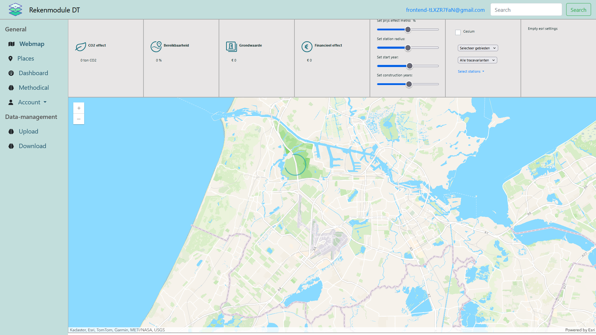

Interní aplikace pro nizozemský trh zaměřená na optimalizaci investičních nemovitostí. Nástroj umožňuje
analyzovat návratnost, scénáře financování a dlouhodobé výnosy na základě různých vstupních parametrů.
Hlavním cílem bylo vytvořit přesný, přehledný a efektivní výpočetní model s důrazem na rychlost práce a
minimalizaci chybovosti.
Více o klientovi:
https://properview.nl/
Vzhled prázdné analyzační stránky. Aplikace dovoluje úpravu vstupních parametrů a okamžitou aktualizaci
výstupů, což usnadňuje rozhodování o investicích do nemovitostí.
